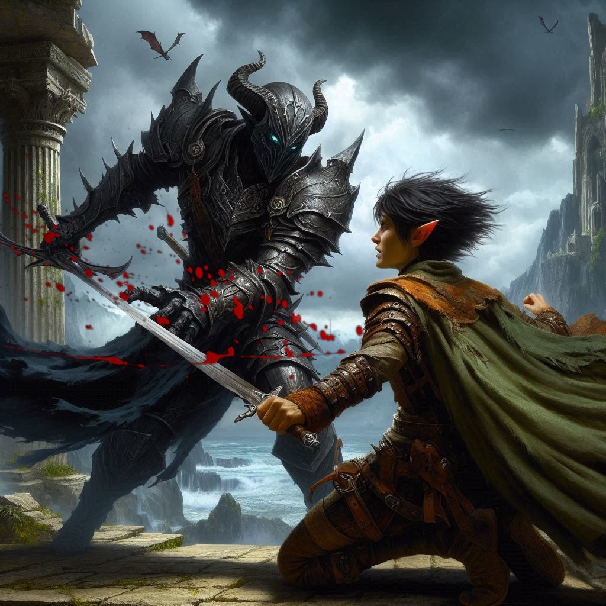
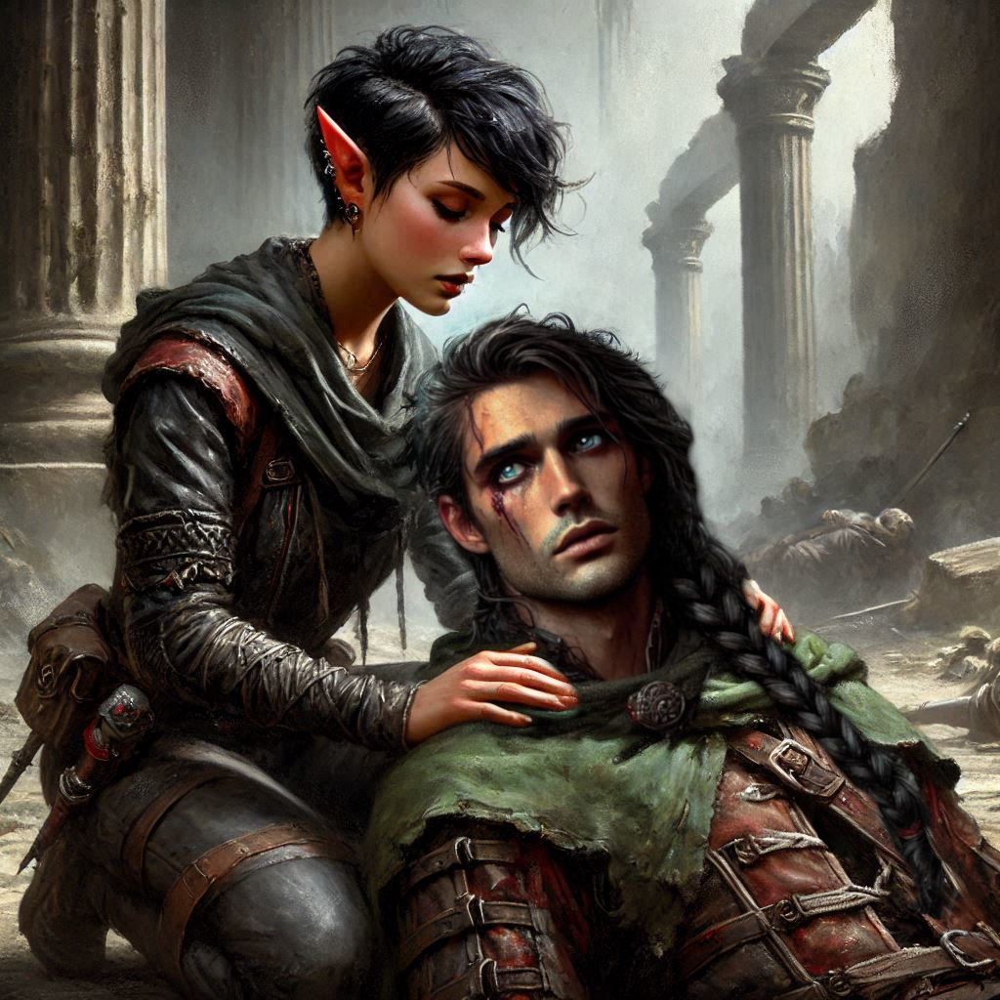

The Last Stand
You and Elias stand shoulder to shoulder in the heart of the abandoned temple, the faint glow of the eldritch torches casting eerie shadows across the stone floor. The air is thick with the stench of decay, and every corner feels alive with malice, whispering of dangers lurking in the dark. A high-pitched wail echoes through the cavernous chamber, the unmistakable war cry of dark elves. You grip your sword tighter, feeling the rough leather of the hilt digging into your palm.
“We’re surrounded,” Elias murmurs, his voice grim but steady. His eyes dart between the shattered pillars and crumbling archways. Every inch of the temple is cloaked in shadow, and somewhere beyond, in the suffocating black, you know the dark elves are waiting. “Back to back, quickly!”
You were already moving instinctively into position when Elias called out the battle plan. “I know,” you reply, your voice a whisper as you raise your sword. Your breath comes in ragged gasps, the weight of the impending battle settling heavily on your shoulders. You feel the comfort of Elias’s back against yours as you survey the half dozen or so dark elves within your field of view.
The dark elves strike without warning, their lithe forms emerging from the shadows like specters. Arrows whistle past your ear, one barely grazing your cheek, and you duck just in time. You parry the first blow, the clash of steel ringing through the temple, and swing your sword with all your might. The dark elf before you sneers as your blade catches him in the side, blood splattering across the stone floor.
Elias fights behind you, his movements fluid and precise, but you both know the odds. There are too many of them. More dark elves swarm from the shadows, their red eyes gleaming with malevolent glee. For every one you fell, another takes its place.
"We can't hold them off much longer," Elias shouts over the din of battle, panting as he parries a blow. He spares a brief glance over his shoulder in your direction, desperation etched across his face.
You grit your teeth. Every instinct screams at you to use the elvish magic buried deep within your blood. You feel the ancient words rising in your throat, ready to spill forth and summon the protection you so desperately need. You were born with this magic, but the fear grips you tighter than any enemy's hand. What if it fails? What if it betrays you?
Instead, you push the words down, ignoring the siren call of your elven heritage, and focus on the fight. Steel over sorcery. You’ve made your choice.
A dark elf lunges at you with a wickedly curved blade, and you dodge to the side, barely avoiding the strike. With a swift motion, you drive your dagger into his chest, but there’s no time to celebrate the victory. Another rushes toward you, and then another.
Elias is at your back, fighting like a whirlwind of fury, his twin blades a blur of motion. But even with his skill, you both know it's a losing battle. The elves press in from every side, their cold, mocking laughter filling the temple like a dark symphony.
You risk a glance toward him, watching as his sword catches the light of the fading torches, and for a fleeting moment, you see the vulnerability in his eyes.
“Kira, I’m sorry,” Elias says, his voice cracking as he stabs another dark elf. “I should have told you sooner. I—”
The words die on his lips as a blade pierces through his side. Blood pours from the wound as he falls to his knees, eyes wide with shock. Time seems to slow. You scream his name, spinning around and dropping to your knees by his side as the dark elves close in, their victory assured. You slice through one more attacker, but your strength is waning, and the wound on your side burns with every movement.
“No,” you whisper, kneeling beside Elias. His breath is shallow, blood seeping from his mouth as he looks up at you, his face pale.
“I failed you,” he gasps, his voice barely audible over the chaos of battle.
“No, you didn’t. You were the bravest,” you manage, your own voice thick with emotion. “You’ve always been by my side, Elias.”
“I love you, Kira,” he chokes out, his eyes glistening with unshed tears. “Since our first day working together.”
Your heart clenches, and for the first time, you allow yourself to truly see him—the loyal friend who stood beside you through everything. The one who always fought for you, who believed in you when you doubted yourself.
“I love you too,” you whisper, leaning closer, brushing his hair away from his face. “I should have told you. I should have seen it sooner.”
His lips curve into a weak smile, but there’s no time for more. The dark elves are upon you. A sharp pain blooms in your chest as a blade finds its mark, and you collapse beside Elias, your vision dimming.
With trembling hands, you reach out for him, your fingers brushing his. His grip tightens, and you both lie there, bleeding and broken, as the world fades around you.
“I’m sorry,” you say one last time, your voice barely a breath.
But Elias doesn’t respond. His eyes are closed, his chest still, and you know that this is the end.
As darkness claims you, the last thing you feel is his hand in yours. The last thing you hear is the distant sound of cruel laughter as the dark elves claim their victory, and the temple fades into the void.